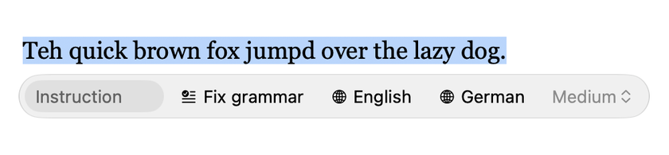

Retext
Fix, translate and rewrite text in any Mac app
Install from GitHubFree and open source. macOS 26 or later. Built from source for now; a signed download is planned.

What it does
Quick at Medium
Select text, press ⌥Space and pick Fix grammar. With Claude Code at the Medium level the model answers in about 2 seconds: the median over the 32 mixed cases (grammar, translation, instructions) of the prompt eval, not counting the CLI's start or the paste.
Rewrite or translate in place
Type "shorter" or "more formal", or translate into your Mac's language. The result replaces your selection and keeps its font, size and colour. ⌘Z undoes it.
Any app, one shortcut
Mail, Notes, Pages, Safari, Slack, VS Code and more. ⌥Space opens the bar; ⌥1…⌥9 run an action straight away. Read-only text is copied instead.
Your own subscription or provider
Retext runs your installed Claude Code or Codex CLI with your own login, so there is no new account or API key. Prefer an API? Any OpenAI-compatible one works, with the key kept in your Keychain.
What leaves your Mac
- Only the text you run Retext on, with its instruction, your protected words and the app's style, and only when you run it.
- Only to the provider you chose: Claude Code (Anthropic), the Codex CLI (OpenAI) or your own API.
- No Retext server, no telemetry, no Retext account. Settings and history stay on your Mac; an API key stays in your Keychain.
- Open source under the Apache 2.0 license, so you can check all of this.
- One update check to GitHub, at most once a day, and you can turn it off.
Claude Code and Codex keep their own settings, including their own telemetry. Privacy details
Also
- Review changes before they replace your text, optional: the bar marks inserted and deleted words, Return replaces.
- Three quality levels: Medium for quick fixes, High for a native rewrite, Max for the most polished text. ↑ and ↓ switch the level in the bar.
- Your own actions (up to 9), per-app styles and protected words that are never changed.
Requirements
- macOS 26 or later.
- One provider: Claude Code installed and logged in, the Codex CLI signed in with ChatGPT, or an OpenAI-compatible API. Each runs under its own login and billing.
- Accessibility permission, so Retext can read the selection and paste the result.